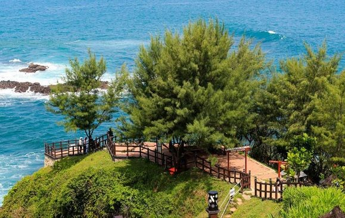
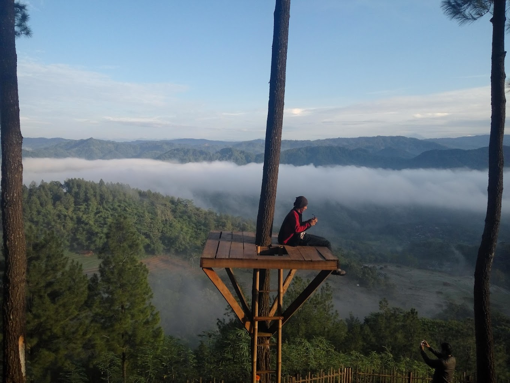
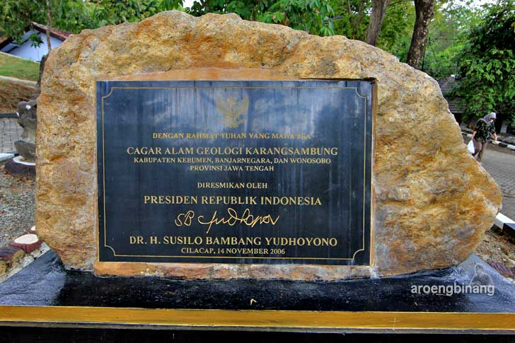

Geografis


Secara geografis, Kabupaten Kebumen terletak pada 7°27'–7°50' Lintang Selatan dan
109°33'–109°50' Bujur Timur. Bagian selatan Kabupaten Kebumen merupakan dataran rendah,
sedangkan pada bagian utara berupa pegunungan dan perbukitan yang merupakan bagian dari
rangkaian Pegunungan Serayu Selatan. Sementara itu di barat wilayah Gombong,
terdapat Kawasan Karst Gombong Selatan sebuah rangkaian pegunungan kapur yang membujur
hingga pantai selatan berarah utara-selatan.
Sungai terbesar di Kabupaten Kebumen adalah Sungai Luk Ulo, Sungai Jatinegara,
Sungai Karanganyar, Sungai Kretek, Sungai Kedungbener,
Sungai Kemit, Sungai Gombong, Sungai Ijo, Sungai Kejawang, dan Kali Medono.
Wisata
Kebumen merupakan tujuan yang tepat bagi mereka yang ingin menikmati wisata alam
sekaligus belajar karena di Kebumen ada banyak objek wisata alam yang dijadikan tempat
wisata edukasi.
Situs Karangsambung

Karangsambung bisa diibaratkan sebagai miniatur geologi Indonesia. Himpunan batuan
beraneka ragam jenis dan ukurannya ditemukan di lokasi situs Karangsambung.
Ukuran batuannya mulai dari yang berukuran kecil (kerikil) sampai batuan yang berukuran
sebesar bukit tersebar pada beberapa lokasi situs Karangsambung. Setiap himpunan bantuan
itu memiliki umur dan sejarah pembentukannya juga berbeda-beda. Singkapan adalah
salah satu istilah dalam geologi yang memiliki arti bagian yang terlihat dari bukaan
batuan dasar atau deposit superfisial purba pada permukaan bumi. Setiap singkapan
batuan menyimpan cerita panjang tentang proses terbentuknya batuan. Mulai dari mekanisme
pembentukan, umur dan jenis batuannya dan mineral yang tersimpan di dalamnya.
Situs Karangsambung menjadi sangat menarik dipelajari, khususnya oleh para ahli geologi.
Setiap tahunnya, ratusan mahasiswa Teknik Geologi dan Teknik Geofisika melakukan
kuliah lapangan di komplek Karangsambung.